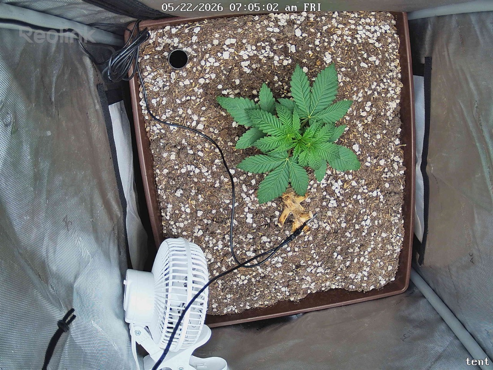

← All reports
May 22, 2026
Fri May 22, 2026 — 7:05 AM

Prognosis
Daily check-in — papaya crush, day 24 from germ
- Structure: Canopy looks slightly more filled-out vs. last night — fan leaves on the upper node are wider and the newest set in the center has visibly extended. Node spacing still tight/stocky, no stretch.
- Posture: Leaves flat-to-slightly-praying, symmetric, reaching outward. No drooping or curling. Healthy phototropic response to the SF-2000.
- Color: Uniform medium-deep green across the canopy; no interveinal yellowing, no edge burn, no tip crisping. Living-soil color is on-point for veg.
- Tacoing/bleaching: None. 400 PPFD is being tolerated well — no upward cupping or pale centers.
- Soil surface: Looks dry on top (expected — last water 5/19, 3 days ago). Perlite still bright/white, no algae, no fungus gnats visible. The yellow leaf litter near the base is the old stump material — leaving it per no-till.
- Pests/disease: Nothing visible on tops or in the surrounding soil. No webbing, no spots, no powdery residue.
- Phase check: Day ~24 from germ, ~17 days in tent. You should be seeing 4–5 true node pairs with lateral expansion — that's exactly what's in the frame. Right on track, arguably slightly ahead given how compact and dark the foliage is.
- Next actions: No action needed. Water is probably due in the next 24–48h — lift the pot tomorrow morning to gauge weight before committing. Hold PPFD at 400; revisit a bump only once you see the next node pair fully expand.
Overall: Textbook healthy veg progression — stocky, dark, symmetric, zero stress signals. Keep doing what you're doing.